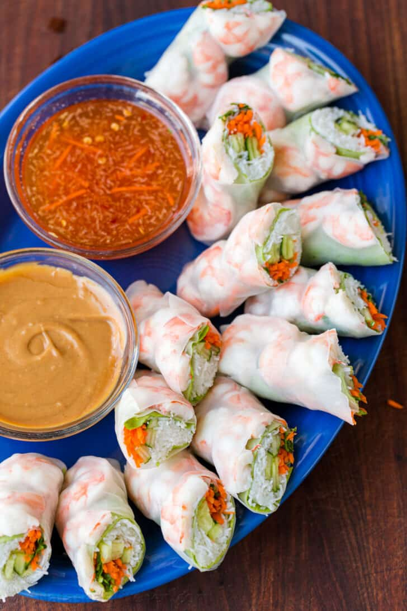

Spring Rolls Recipe

Description
Springs rolls are a delicious food to eat as a snack, lunch, or dinner! They can be
made with fresh vegetables, herbs, and any protein you'd enjoy- it's so refreshing
to eat. You won't be able to stop.
These are typically filled with shrimp, pork, and fresh veggies. They can be eaten
by themselves or also enjoyed with a hoisin peanut sauce and/or prepared fish
sauce.
Ingredients
- rice paper
- shrimp
- another protein (I like using ground turkey)
- vermicelli noodles (shirataki noodles if looking for low carb)
- romaine lettuce
- shredded carrots
- cilantro
- cucumbers
- mint
Steps
- Wash and prepare all fresh vegetables
- Cook your protein
- Clace all your ingredients near your building station
- Fill a large bowl with warm water
- Quickly dunk/spin rice paper into warm water until there are no dry spots
- Set the wetted rice paper onto a board or plate
- Line 3 shrimp horizontally
- Place romaine lettuce over shrimp (if your lettuce isn't completely flat,
place it like a bowl to hold the rest of the ingredients)
- Place second protein onto lettuce
- Add your other fresh veggies
- Wrap it like a burrito and enjoy!